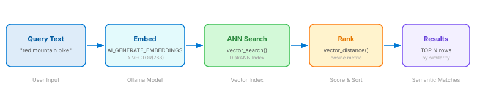
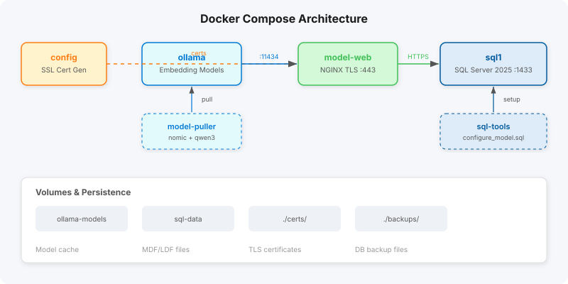

Vector Search in SQL Server 2025
From text to embeddings to semantic search — all in T-SQL
- What are vectors?
- Cosine similarity
- Embedding models
- SQL Server VECTOR type
- DiskANN indexing
- Semantic search queries
From text to embeddings to semantic search — all in T-SQL
In the context of AI and machine learning, a vector is a fixed-length array of numbers that represents the meaning of a piece of text. Think of it as coordinates in a high-dimensional “meaning space” — words or sentences with similar meanings land close together.
The interactive plot below shows a simplified 2D projection of 15
words. Notice how semantically related words (vehicles, colors,
clothing, gear) naturally form clusters. Real embedding models like
nomic-embed-text produce 768-dimensional vectors —
far more nuance than we can visualise, but the principle is identical.
nomic-embed-text (768 dimensions)
Cosine similarity measures the angle between two vectors, not the distance between their endpoints. Two vectors pointing in the same direction have a cosine similarity of 1; perpendicular vectors score 0; opposite vectors score −1.
Drag the arrow tips below to change the angle and watch the cosine value update in real-time:
SQL Server’s vector_distance('cosine', ...) returns
cosine distance, not similarity. The relationship is:
A distance of 0 means the vectors are identical; closer to 2 means they point in opposite directions. When ranking search results, you sort by distance ascending.
Cosine cares about direction (what the text means) while ignoring magnitude. Euclidean cares about absolute position in vector space. For text embeddings, cosine is almost always preferred because embedding models normalise direction to encode meaning, while magnitude can vary with text length.
Let’s compute cosine similarity by hand using two tiny sentences and a 5-word vocabulary. Click Next Step to walk through each stage of the calculation, or hit Auto-play to watch the full animation.
Three hands-on demos that let you explore cosine similarity yourself. Each builds on the concepts above — pick a tab and start experimenting.
nomic-embed-text capture far deeper semantic meaning
— this is just to show the mechanism.
Click any two sentence cards to compare their cosine similarity:
Select two sentences to compare.
Type any text in both fields — the similarity score updates in real-time as you type:
Type in both fields to see the similarity.
Your browser is now a tiny vector search engine. Type a query and watch 15 products ranked by similarity in real-time:
An embedding model is the neural network that converts text into vectors. Different models produce different dimensionalities and capture different nuances. This project uses two models served locally by Ollama:
768 dimensions — general-purpose embedding model. Used for the AdventureWorks product search and country master-data demos.
Ollama exposes a REST API at :11434. An NGINX reverse
proxy adds TLS (port 443), which SQL Server requires for external
model calls. The flow is:
SQL Server calls this transparently via
AI_GENERATE_EMBEDDINGS().
SQL Server 2025 introduces native vector support. Here are the key features demonstrated in this project, with actual code from the POC:
Store fixed-length vectors directly in a column:
CREATE TABLE ProductEmbeddings (
ProductID INT PRIMARY KEY,
chunk NVARCHAR(2000),
embeddings VECTOR(768)
);Register an Ollama embedding endpoint so SQL Server can call it:
CREATE EXTERNAL MODEL ollama
WITH (
LOCATION = 'https://model-web:443/api/embed',
API_FORMAT = 'Ollama',
MODEL_TYPE = EMBEDDINGS,
MODEL = 'nomic-embed-text'
);Convert text to a vector in a single function call:
INSERT INTO ProductEmbeddings (ProductID, chunk, embeddings)
SELECT
p.ProductID,
p.Name + ' ' + ISNULL(p.Color, '') + ' ' + c.Name AS chunk,
AI_GENERATE_EMBEDDINGS(
p.Name + ' ' + ISNULL(p.Color, '') + ' ' + c.Name
USE MODEL ollama
) AS embeddings
FROM [SalesLT].[Product] p
JOIN [SalesLT].[ProductCategory] c
ON p.ProductCategoryID = c.ProductCategoryID;Compute cosine distance between two vectors:
DECLARE @search VECTOR(768) =
AI_GENERATE_EMBEDDINGS('red bike budget' USE MODEL ollama);
SELECT TOP(5)
pe.ProductID,
p.Name,
vector_distance('cosine', @search, pe.embeddings) AS distance
FROM ProductEmbeddings pe
JOIN [SalesLT].[Product] p ON pe.ProductID = p.ProductID
ORDER BY distance;Create an approximate nearest-neighbour index for fast search:
ALTER DATABASE SCOPED CONFIGURATION
SET PREVIEW_FEATURES = ON;
CREATE VECTOR INDEX vec_idx
ON ProductEmbeddings([embeddings])
WITH (metric = 'cosine', type = 'diskann', maxdop = 8);Use the index for blazing-fast approximate search:
SELECT TOP(10)
t.ProductID,
s.distance
FROM vector_search(
table = ProductEmbeddings AS t,
column = [embeddings],
similar_to = @search,
metric = 'cosine',
top_n = 10
) AS s
ORDER BY s.distance;AI_GENERATE_EMBEDDINGS() on every chunk to produce
768-dimensional vectors.
Without an index, every query scans all rows and computes cosine distance on each one. With a DiskANN vector index, the query uses approximate nearest-neighbour search — orders of magnitude faster for large datasets.
The complete flow from user input to ranked results:

The entire stack runs in Docker Compose with 6 orchestrated services.
SQL Server connects to Ollama through an NGINX TLS proxy because
CREATE EXTERNAL MODEL requires HTTPS.

SQL Server 2025 requires HTTPS endpoints for external model calls.
Since Ollama only serves plain HTTP, an NGINX reverse proxy with a
self-signed certificate bridges the gap. The certificate is generated
at startup by the config service and shared via a Docker
volume.
Alpine container that generates self-signed SSL certificates at startup.
Runs embedding models (nomic-embed-text
TLS reverse proxy exposing Ollama over HTTPS on port 443.
Sidecar that pulls the required models into Ollama on first startup.
SQL Server 2025 with vector support. Trusts the generated TLS certificate.
Runs configure_model.sql to register the external
model endpoint.
This starts all 6 services. On first run, model download may take a few minutes.
localhost:1433 with SA credentials from the
compose file.
Each SQL file is self-contained with comments explaining every step.